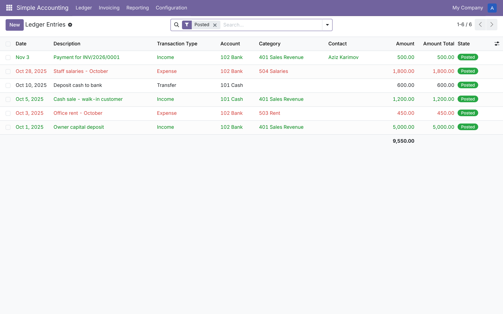
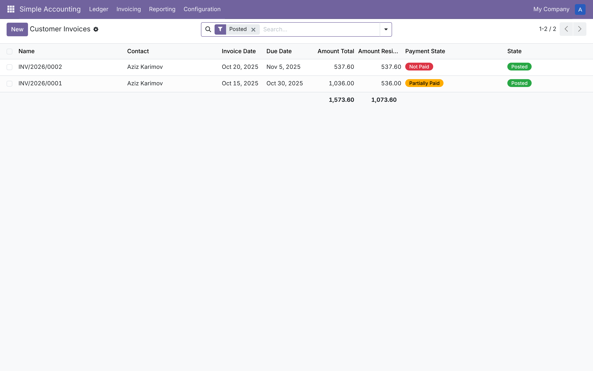
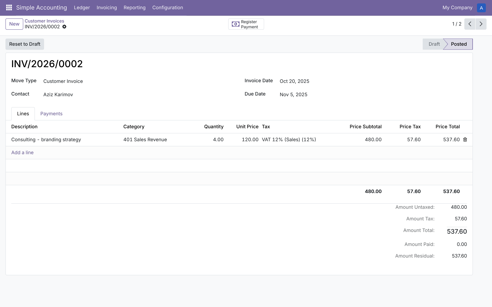
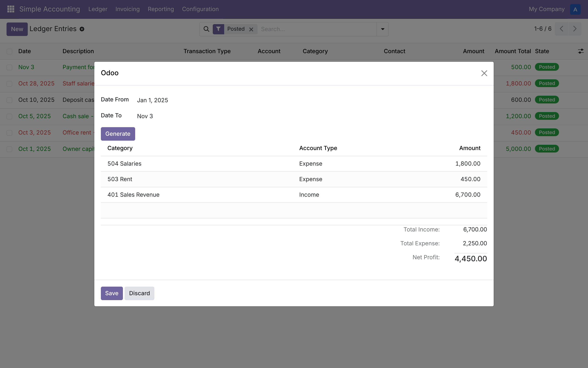
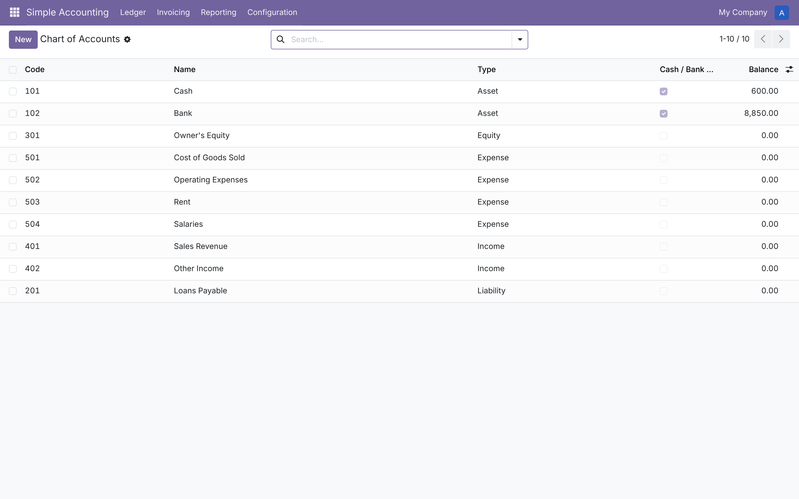

Odoo's full Accounting app is built for accountants: journals, fiscal positions, reconciliation models, chart-of-account templates per country. Most small businesses just need to know three things — what came in, what went out, and who still owes them money. Simple Accounting is a small, standalone app that answers exactly that, with nothing else to learn.
Short chart of accounts. Asset, liability, equity, income, expense — five types, nothing more. Comes pre-loaded with a sensible starter set (Cash, Bank, Sales Revenue, Rent, Salaries...) you can rename or extend.
Income / expense / transfer entries. Record a sale, an expense or a transfer between cash and bank in one screen. Draft until you're ready, then post.
Customer invoices & vendor bills. Multi-line, with automatic tax computation and a live outstanding balance. Register a payment and the matching cash entry is posted for you automatically.
Three reports that always add up. Profit & Loss, a Balance Sheet that balances even with unpaid invoices outstanding, and a Tax report for what you've collected and paid.





Freelancers, shops and small teams who want to know their cash position and send a clean invoice, without a bookkeeping degree. It is not a replacement for the full Accounting app in businesses that need multi-currency consolidation, fiscal-year locking, bank reconciliation imports or statutory reporting — for those, Odoo's standard Accounting app is the right tool.
Simple Accounting depends only on Odoo's base module.
It does not read, write or alter any account.* model,
so it installs cleanly whether or not the Accounting app is
present, and works the same way on Community and Enterprise.